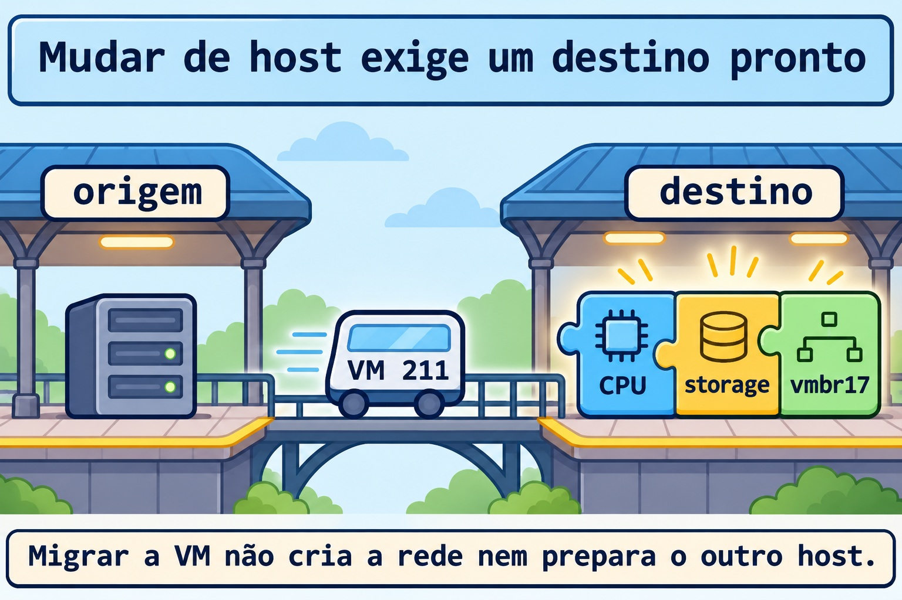
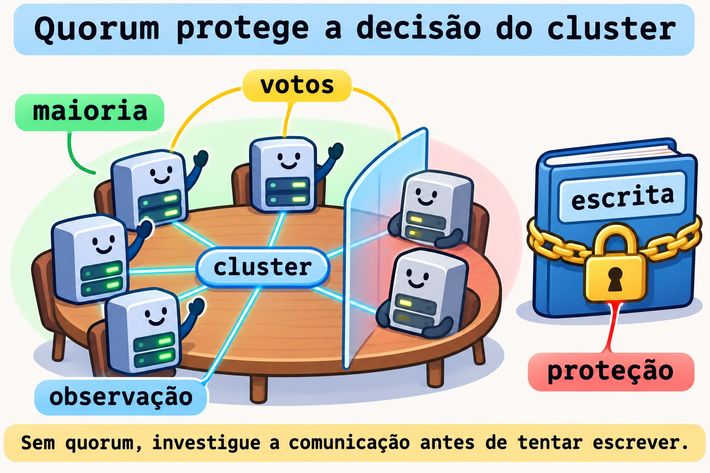
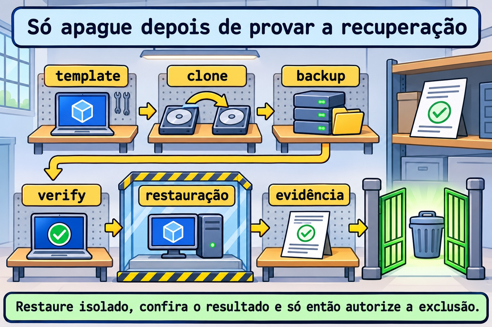

Aula 17.7 · Migração e quorum
O coração desta aula: migrar exige um destino preparado; apagar exige uma recuperação já demonstrada.
| Ficha | Plano de trabalho |
|---|---|
| Módulo | M17 · Proxmox na prática, aula 7 de 7 |
| Quando | Semana 24 |
| Ao final | Avaliar migração e quorum e provar recuperação da bancada |
| Pré-requisitos | Aulas anteriores, PBS-LAB disponível, evidência externa e console |
| Duração | 150–210 minutos, além das transferências |
| Snapshot | Preservar o ponto de retorno existente; o desafio exige backup independente |
Esta aula fecha o módulo e retoma seu diagnóstico inicial. Primeiro você consulta o cluster e, se houver condições reais, migra a VM 211. Depois realiza um ensaio de recuperação isolado, com barreiras antes de qualquer exclusão. Os convidados 201 a 205 e a bridge isolada permanecem preservados.
1 · Aquecimento
- Configuração replicada significa que o disco local está disponível no destino?
- Um cluster sem maioria deve aceitar alterações concorrentes dos dois lados?
- Backup concluído basta para autorizar a exclusão da única VM?
Recupere o plano que você escreveu na primeira aula. Sublinhe o que agora consegue provar, em vez de apenas descrever. Deixe explícito o que sua bancada não permite executar.
2 · Por que importa
Migração não instala rede, não cria storage e não acrescenta instruções à CPU do destino. Ela depende dessas condições já existentes. Uma tarefa aceita pode falhar depois por uma condição que você poderia ter conferido antes.
Quorum protege decisões de configuração; não é um indicador de velocidade da rede. Sua ausência exige investigar membros, votos e comunicação. Forçar uma maioria não é uma forma didática de reparar o cluster real.
O fechamento acrescenta outra disciplina: testar a recuperação antes de precisar dela. O relatório deve continuar existindo quando o convidado original já não existe.
Ponte Windows
Mover uma carga entre hosts exige compatibilidade de recursos e conectividade equivalente. O nome da rede pode ser igual e representar uma ligação diferente no outro host. Você precisa conferir significado e alcance, não somente o rótulo.
3 · Modelo mental


| Condição | Evidência | Se faltar |
|---|---|---|
| Destino no mesmo cluster | Inventário e membros | Não executar migração |
| CPU compatível | Modelo, fabricante e recursos em ambos | Resolver antes da tentativa |
| Discos compartilhados | Todos os volumes acessíveis nos dois nós | Não presumir transferência implícita |
| Redes equivalentes | Bridge, portas e isolamento | Preparar fora desta operação |
| Quorum | Maioria e comunicação saudáveis | Investigar somente por leitura |
Migração e restauração são operações diferentes. Na migração, a propriedade da VM muda dentro do cluster. Na restauração, um backup reconstrói discos e configuração em um ID controlado. Nenhuma delas autoriza colocar duas identidades iguais na mesma rede.
4 · O essencial
Esta aula usa migração convencional dentro do mesmo cluster. Não configure migração remota entre clusters nem altere quorum para completar o roteiro. Todos os volumes da VM 211 devem estar em storage compartilhado disponível no destino. Isso inclui disco do sistema, EFI, cloud-init e o disco de dados acrescentado antes.
As versões do destino devem ser compatíveis e não anteriores às da origem para a operação planejada. Use a matriz e as notas da versão instalada, com o mesmo fabricante de CPU para esta prática. Se não consegue demonstrar compatibilidade, escolha o ramo não executado.
Bancada de um único nó
Você fará as consultas disponíveis e documentará uma migração planejada, não realizada. Não invente um destino nem crie um cluster temporário no host para preencher a evidência. O ensaio de backup e restauração pode continuar no mesmo nó, se seus pré-requisitos estiverem atendidos.
5 · Lab guiado
Passo 1 · Descobrir os membros e o quorum
Palpite: qual consulta diferencia um destino real de um nome escrito no diário?
pvesh get /nodes --output-format json-pretty
pvesh get /cluster/resources --type vm --output-format json-pretty
pvesh get /cluster/status --output-format json-pretty
pvecm statusSaída esperada: membros reais e estado de quorum, quando o nó pertence a um cluster. Em um nó independente, a consulta do gerenciador de cluster pode indicar que não há configuração de cluster. Registre essa condição; ela não é autorização para criar um cluster.


Verifique: há pelo menos dois nós reais no mesmo cluster e quorum saudável? Se não, marque migração não realizada e pule os comandos de execução do passo 4. Não desligue membros, bloqueie comunicação nem altere votos para simular perda de quorum.
Passo 2 · Conferir os recursos do destino
Palpite: uma bridge com o mesmo nome possui necessariamente as mesmas ligações?
Nos nós de origem e destino, faça apenas as consultas abaixo.
pveversion -v
lscpu
pvesm status
ip -d link show vmbr0
ip -d link show vmbr17
bridge link
ip -br address show vmbr17Saída esperada: recursos compatíveis e bridge isolada já existente nos dois nós. A bridge isolada não recebe IP no host nem porta física, e não deve alcançar a rede de gestão. Não crie ou reconfigure a bridge do destino dentro desta tentativa de migração. Se ela falta, pare e obtenha a preparação autorizada antes de voltar a este passo.
Verifique: fabricante, modelo de CPU exposto, versões, RAM e storage servem ao destino escolhido? Repita a conferência completa dos recursos de CPU feita na criação da bancada. Registre quais condições foram demonstradas e quais ficaram pendentes.
Passo 3 · Conferir a VM e todos os volumes
Palpite: qual disco pequeno costuma ser esquecido em uma avaliação de migração?
No nó proprietário da VM 211, consulte sua ficha e tarefas atuais.
qm status 211
qm config 211
qm pending 211
pvenode task list --limit 10Saída esperada: VM da bancada sem outra operação concorrente e sem alteração pendente inexplicada. Liste os identificadores de todos os volumes, incluindo EFI, cloud-init e dados. Confirme o acesso aos mesmos backends em ambos os nós; não basta o nome estar cadastrado. Dispositivo passado diretamente, mídia local ou recurso restrito ao nó exige análise fora deste roteiro.
Dentro do clone, registre endereço, rota, estado do agente e acesso ao dado da aula de storage. Não formate nem substitua o disco de dados para simplificar a lista.
Verifique: a ficha identifica m17-vm, e nenhum volume depende somente da origem?
Se há tarefa ativa de backup, snapshot ou alteração de disco, espere sua conclusão e reavalie.
Não remova um bloqueio para forçar concorrência.
Passo 4 · Migrar somente quando as condições permitem
Palpite: que evidência comprova a mudança de proprietário depois da tarefa?
Antes de migrar, confirme que nenhum disco está em storage local e nenhum unusedN é local. Confira também EFI, cloud-init e mídia ISO. Se houver uma dependência local, não execute a migração: volte ao retorno para storage compartilhado da 17.4. Não apague um unusedN para fazer a guarda passar.
qm config 211 | grep -E '^((ide|sata|scsi|virtio)[0-9]+|efidisk0|tpmstate0|unused[0-9]+):'
pvesm statusExecute este bloco apenas no ramo com destino real, quorum e recursos conferidos. Leia o nome de um nó que realmente apareceu no inventário e confira antes de confirmar.
read -r -p 'No de destino real no mesmo cluster: ' DESTINO
: "${DESTINO:?}"
test "$(qm config 211 | sed -n 's/^name: //p')" = m17-vm || exit 1
qm migrate 211 "$DESTINO" --online 1 || exit 1Saída esperada: tarefa concluída sem erro e propriedade da VM no destino. Não interprete uma linha de progresso como conclusão final. Consulte o inventário do cluster e o log da tarefa que acabou de executar.
pvesh get /cluster/resources --type vm --output-format json-prettyNo nó destino, confira a VM pelo ID e pelo nome antes de usar a console. Dentro dela, repita as provas de rede, agente e leitura do dado que registrou antes. Se a sessão interrompeu, registre duração e sintoma real, sem prometer ausência de interrupção.
Verifique: a aplicação ou o dado observado continua acessível no novo proprietário? No ramo de um nó, escreva quais condições faltaram e deixe a migração marcada não realizada. Não use uma captura de outra bancada como prova da sua.
Passo 5 · Ensaiar a recuperação sem apagar a origem
Palpite: o teste de restauração pode revelar algo que o sucesso do backup não revela?


Use o fluxo da aula anterior para obter backup novo da VM 211 no storage já cadastrado. O disco de dados deve estar incluído; confira sua participação na ficha antes de iniciar.
vzdump 211 --storage PBS-LAB --mode snapshot --remove 0 || exit 1
pvesm list PBS-LAB --vmid 211Selecione o volume exato criado agora; não escolha apenas o primeiro item da lista. No PBS, execute a verificação desse backup e espere o resultado final bem-sucedido. Se você não tem acesso autorizado ao resultado, pare antes de qualquer exclusão. O CT 212 da aula anterior deve já ter sido removido pelo procedimento de limpeza dela. Se ainda existe qualquer objeto 212, não o sobrescreva: resolva primeiro sua preservação e limpeza autorizada.
pvesh get /cluster/resources --type vm --output-format json-pretty
read -r -p 'Volume exato do backup verificado: ' BACKUP_PREVIO
: "${BACKUP_PREVIO:?}"
case "$BACKUP_PREVIO" in PBS-LAB:backup/vm/211/*) ;; *) exit 1 ;; esac
set -o pipefail
pvesh get /cluster/resources --type vm --output-format json |
perl -MJSON::PP -0777 -e '$r=decode_json(<>); exit((scalar grep { $_->{vmid} == 212 } @$r) ? 1 : 0)' || exit 1
pvesm status
read -r -p 'Storage de imagens autorizado para restore: ' RESTORE_STORE
: "${RESTORE_STORE:?}"
qmrestore "$BACKUP_PREVIO" 212 --storage "$RESTORE_STORE" --unique 1 --start 0 || exit 1
qm set 212 --name m17-restore --onboot 0 || exit 1
qm config 212Antes de iniciar 212, desconecte todas as NICs restauradas na ficha da VM. Preserve seus parâmetros e acrescente o estado desconectado; confira cada índice existente. Não confunda MAC novo com identidade interna nova; a restauração mantém o conteúdo do backup. Use esta função apenas nos dois IDs de restauração da bancada; ela preserva os demais parâmetros de cada NIC.
desconectar_nics_m17() {
local id="$1" nic spec config nome nics
case "$id" in 211|212) ;; *) return 1 ;; esac
config=$(qm config "$id") || return 1
nome=$(printf '%s\n' "$config" | sed -n 's/^name: //p')
case "$id:$nome" in 211:m17-vm|212:m17-restore) ;; *) return 1 ;; esac
nics=$(printf '%s\n' "$config" | sed -nE 's/^(net[0-9]+): .*/\1/p')
test -n "$nics" || return 1
while IFS= read -r nic; do
spec=$(printf '%s\n' "$config" | sed -n "s/^$nic: //p")
spec=$(printf '%s' "$spec" | sed -E 's/,link_down=[01]//g')
test -n "$spec" || return 1
qm set "$id" "--$nic" "$spec,link_down=1" || return 1
done <<< "$nics"
config=$(qm config "$id") || return 1
printf '%s\n' "$config" | awk '/^net[0-9]+:/ && $0 !~ /,link_down=1(,|$)/ {bad=1} END {exit bad}' || return 1
}
desconectar_nics_m17 212 || { printf '%s\n' 'STOP: isolation failed' >&2; exit 1; }
qm config 212Confira na saída real que cada NIC está desconectada; só depois execute a inicialização.
desconectar_nics_m17 212 || exit 1
qm start 212 || exit 1
qm terminal 212Use somente a console para iniciar, entrar e ler o dado restaurado no disco da aula de storage.
Use a credencial local testada na 17.6, confirme o shell correto e identifique o disco pelo serial M17DATA. A montagem manual e o hash do arquivo devem coincidir com o diário da 17.4; o marcador da raiz não substitui essa prova.
Saída esperada: restauração 212 isolada com sistema e dado conferidos. Verifique: registre backup, verify, restauração, leitura e isolamento fora dos convidados. Sem essa sequência completa, a barreira de exclusão continua fechada.
Passo 6 · Autorizar a preparação do desafio
Palpite: o que precisa sobreviver fora da VM antes de liberar seu ID?
Conserve o backup prévio, o dado de storage e o relatório externo do passo 5. A evidência deve identificar o backup exato e a restauração 212 realmente testada. Somente depois dessa prova você pode liberar a VM de exercício e sua restauração temporária. Desligue os dois sistemas de forma limpa antes de remover seus objetos.
qm shutdown 211 --timeout 120
qm shutdown 212 --timeout 120
qm status 211
qm status 212
qm config 211
qm config 212Saída esperada: ambos desligados; nomes correspondem exatamente à bancada e à restauração. Se o desligamento não concluir, investigue pela console; não force para cumprir o tempo. Antes das exclusões, outra pessoa deve conseguir localizar o relatório externo. Execute cada comando abaixo somente depois de conferir nome, estado e a prova de recuperação.
test "$(qm config 211 | sed -n 's/^name: //p')" = 'm17-vm' && \
test "$(qm status 211)" = 'status: stopped' && qm destroy 211
test "$(qm config 212 | sed -n 's/^name: //p')" = 'm17-restore' && \
test "$(qm status 212)" = 'status: stopped' && qm destroy 212Verifique: os IDs 211 e 212 ficaram livres no inventário completo, e 210 continua template desligado. Nesta etapa, preserve backups e bridge: o desafio abaixo ainda usa essa rede. A retirada da bridge fica somente para a limpeza final, depois de todos os convidados temporários. Se você não concluiu a prova do passo 5, preserve tudo e marque o desafio bloqueado na preparação.
6 · Quebre e conserte
As quebras são decisões sobre a evidência; não provoque falhas no cluster real.
Quebra 1 · A bridge falta no destino
Sintoma: o inventário de rede do destino não contém a bridge isolada. Investigação: compare bridge, portas e endereços nos dois nós. Causa: o nome da rede da origem foi tratado como recurso automaticamente criado no destino. Conserto: suspenda a migração e solicite a preparação autorizada equivalente. Verifique: repita a consulta depois da preparação; só então reavalie a migração. Prevenção: rede integra a lista de pré-requisitos, não a lista de reparos após mover.
Quebra 2 · A maioria não está disponível
Sintoma: uma evidência fornecida mostra cluster sem quorum e configuração somente leitura. Investigação: relacione membros vistos, votos esperados e comunicação registrada. Causa: a partição observada não reúne as condições para decidir alterações com segurança. Conserto: preserve a evidência e encaminhe a recuperação da comunicação ao procedimento operacional. Verifique: só retome alterações quando a condição normal estiver restaurada e documentada. Prevenção: não altere votos nem remova membros para tornar uma tela verde.
Quebra 3 · O backup não contém o dado esperado
Sintoma: a restauração isolada não apresenta o marcador ou o dado esperado. Investigação: compare instante do backup, volumes incluídos e caminho conferido. Causa: pode haver backup antigo, disco excluído ou leitura do lugar errado. Conserto: preserve a origem e produza novo backup correto antes de repetir a restauração. Verifique: compare conteúdo e checksum com a evidência externa; só sucesso de tarefa não basta. Prevenção: leia um dado conhecido na restauração antes de autorizar qualquer exclusão.
7 · Armadilhas
Decida 1
O disco principal é compartilhado, mas EFI está em storage local. Você deve: A. Ignorar EFI porque o volume é pequeno. B. Tratar a condição como pré-requisito não atendido e preparar o volume pelo procedimento autorizado. C. Apagar EFI antes de migrar.
Decida 2
O verify terminou bem, mas ninguém iniciou a restauração isolada. Você deve: A. Preservar a origem até concluir a prova de restauração e registrar seu resultado fora dela. B. Considerar a presença do arquivo equivalente ao teste. C. Excluir a origem e descobrir depois.
Rocky × Debian
O host permanece seguindo o procedimento do hipervisor; o convidado preserva seu próprio sistema. Uma migração não converte a distribuição interna nem regenera suas identidades.
8 · Quiz
- Quais volumes devem entrar na avaliação de migração?
- O que escrever quando existe apenas um nó?
- Por que o quorum bloqueia escrita em uma partição sem maioria?
- O que um MAC novo não muda em uma restauração?
- Qual evidência deve existir antes de excluir a VM original?
- Por que preservar o bridge isolado no fechamento?
9 · Lembrete
Flashcards: relacione decisão e prova.
| Frente | Verso |
|---|---|
| Migrar | Destino, CPU, versões, volumes e redes demonstrados |
| Sem quorum | Investigar comunicação sem alterar votos |
| Excluir | Recuperação isolada comprovada e evidência externa |
| Restaurar | Iniciar sem rede conectada até conferir identidade |
!explica Por que o quorum protege a configuração do cluster?
!feynman Explique por que mover uma VM não prepara o host de destino.
!quiz Pergunte sobre recuperação antes de exclusão, uma etapa por vez.10 · Checklist e fechamento
Desafio do módulo · Reconstruir sem depender da origem
Execute somente se os IDs 211 e 212 ficaram livres após o ensaio comprovado do lab. O backup anterior continua preservando os dados das aulas de storage. O novo clone deste desafio nasce do template e não contém aquele disco de dados. Seu marcador novo será criado no disco do sistema e conferido separadamente.
- Confirme template 210 desligado e IDs 211 e 212 livres no cluster inteiro.
- Crie clone completo 211 e conecte sua única NIC apenas à bridge isolada. Volte ao nó proprietário do template 210 antes de clonar. O clone será criado nesse nó; use-o também nas consultas locais e na restauração do desafio. Nesse shell, redefina a função de isolamento do Passo 5 se necessário; confira a bridge isolada, o storage real autorizado e a chave pública antes de criar.
test "$(qm config 210 | sed -n 's/^name: //p')" = m17-template || exit 1
test "$(qm config 210 | sed -n 's/^template: //p')" = 1 || exit 1
test "$(qm status 210)" = 'status: stopped' || exit 1
set -o pipefail
pvesh get /cluster/resources --type vm --output-format json |
perl -MJSON::PP -0777 -e '$r=decode_json(<>); exit((scalar grep { $_->{vmid} == 211 || $_->{vmid} == 212 } @$r) ? 1 : 0)' || exit 1
pvesm status
read -r -p 'Storage de imagens autorizado para o clone: ' CLONE_STORE
: "${CLONE_STORE:?}"
qm clone 210 211 --name m17-vm --full 1 --storage "$CLONE_STORE" || exit 1
qm set 211 --net0 virtio,bridge=vmbr17,link_down=1 --onboot 0 || exit 1
test -s /root/m17-work/student.pub || exit 1
qm set 211 --ciuser student --sshkeys /root/m17-work/student.pub || exit 1
qm set 211 --ipconfig0 ip=192.0.2.211/24 || exit 1
qm set 211 --ciupgrade 0 || exit 1
qm config 211- Defina uma senha temporária de console por entrada interativa, sem colocá-la em linha de comando. O comando recebe apenas o hash; a senha não aparece na lista de argumentos nem no histórico. Não execute este bloco com rastreamento de comandos habilitado. A atualização de pacotes no primeiro boot está desativada porque a rede é isolada.
set +x
read -rs -p 'Senha temporaria forte para console de student: ' M17_SENHA
printf '\n'
test -n "$M17_SENHA" || exit 1
M17_HASH=$(printf '%s\n' "$M17_SENHA" | openssl passwd -6 -stdin) || exit 1
unset M17_SENHA
qm set 211 --cipassword "$M17_HASH" || { unset M17_HASH; exit 1; }
unset M17_HASH
qm cloudinit update 211 || exit 1
desconectar_nics_m17 211 || exit 1
qm start 211 || exit 1
qm terminal 211Entre pela console com o usuário de estudo e a senha recém-definida. Não disponibilize essa senha no relatório. A configuração de senha do cloud-init pode habilitar autenticação SSH por senha; por isso o primeiro boot acontece com todas as NICs desconectadas. Mantenha os links desconectados durante todo o desafio. Antes de qualquer reconexão futura, configure a política SSH sem senha e confira o resultado efetivo dentro do convidado.
sudo sshd -T | grep -E '^(passwordauthentication|kbdinteractiveauthentication|pubkeyauthentication) 'Essa leitura apenas mostra a política; ela não a corrige. Não reconecte enquanto a autenticação por senha não estiver desabilitada e conferida. Inicie pela console, confirme o isolamento e crie o marcador dentro do novo clone.
printf '%s\n' 'M17 recuperacao comprovada' | sudo tee /var/tmp/m17-desafio.txt
sha256sum /var/tmp/m17-desafio.txt- Copie o checksum para seu diário externo; faça backup novo de 211 no PBS-LAB e aguarde o verify correspondente.
- Restaure esse backup em 212, nomeie
m17-restore, deixe todas as NICs desconectadas antes de iniciar e confira o marcador pela console. - Registre tarefa, volume exato, verify, checksum restaurado e isolamento fora das VMs.
- Só depois da prova, desligue 211, confira o nome e remova apenas a VM 211 com a guarda do lab.
- Restaure o mesmo backup no ID 211 livre, sem iniciar automaticamente.
read -r -p 'Volume exato do backup do desafio ja verificado e testado: ' BACKUP_DESAFIO
: "${BACKUP_DESAFIO:?}"
case "$BACKUP_DESAFIO" in PBS-LAB:backup/vm/211/*) ;; *) exit 1 ;; esac
pvesh get /cluster/resources --type vm --output-format json |
perl -MJSON::PP -0777 -e '$r=decode_json(<>); exit((scalar grep { $_->{vmid} == 211 } @$r) ? 1 : 0)' || exit 1
pvesm status
read -r -p 'Storage de imagens autorizado para restore do desafio: ' RESTORE_STORE
: "${RESTORE_STORE:?}"
qmrestore "$BACKUP_DESAFIO" 211 --storage "$RESTORE_STORE" --unique 1 --start 0 || exit 1
qm set 211 --name m17-vm --onboot 0 || exit 1
qm config 211Desconecte todas as NICs restauradas antes de iniciar 211 e repita a leitura do marcador pela console. Reutilize a função do passo 5; se abriu outra sessão de host, defina-a novamente antes de chamar.
desconectar_nics_m17 211 || { printf '%s\n' 'STOP: isolation failed' >&2; exit 1; }
qm config 211Confira na saída real que todas as NICs continuam desconectadas antes de iniciar.
desconectar_nics_m17 211 || exit 1
qm start 211 || exit 1
qm terminal 211Não ligue 211 e 212 à mesma rede para facilitar a comparação. O desafio termina quando o checksum coincide e o relatório permite reconstruir a sequência.
Último exercício: compare seu diagnóstico inicial com a entrega agora comprovada. Separe migração realizada, migração não realizada e recuperação realmente testada.
Verificação pontual sem interface web
Para o desafio, use somente terminais, inclusive no PBS. No terminal administrativo autorizado do PBS de laboratório, identifique datastore e namespace reais correspondentes ao storage cadastrado no PVE. Não execute este bloco no host PVE nem dentro do convidado. Copie a identidade exata do snapshot recém-criado; não escolha um grupo inteiro.
read -r -p 'Datastore PBS real do inventario: ' PBS_STORE
read -r -p 'Namespace PBS autorizado (vazio = raiz): ' PBS_NS
read -r -p 'Snapshot exato vm/211/data-UTC do backup: ' PBS_SNAP
: "${PBS_STORE:?}" "${PBS_SNAP:?}"
case "$PBS_STORE" in *[!A-Za-z0-9_-]*|'') exit 1 ;; esac
case "$PBS_SNAP" in vm/211/*) ;; *) exit 1 ;; esac
PBS_EPOCH=$(date -u -d "${PBS_SNAP#vm/211/}" +%s) || exit 1
PBS_EXTRA=()
test -z "$PBS_NS" || PBS_EXTRA=(--ns "$PBS_NS")
proxmox-backup-debug api usage "/admin/datastore/$PBS_STORE/verify" --verbose 1Compare tipo, ID, instante UTC e namespace com o backup anotado. Confira a ajuda local; se os parâmetros não correspondem à versão instalada, pare antes da chamada de criação.
proxmox-backup-debug api create "/admin/datastore/$PBS_STORE/verify" \
--backup-type vm --backup-id 211 --backup-time "$PBS_EPOCH" \
--ignore-verified false "${PBS_EXTRA[@]}" || exit 1
read -r -p 'UPID real retornado pela verificacao: ' PBS_UPID
: "${PBS_UPID:?}"
proxmox-backup-manager task log "$PBS_UPID"
proxmox-backup-manager task list --all 1 --output-format json-prettyO UPID inicia a observação, não prova a conclusão. Espere o término e leia o log e a tarefa parada correspondente: só aceite conclusão bem-sucedida do snapshot exato. Preserve esse resultado fora das VMs; não use uma verificação antiga ou global como substituta. Repita esta verificação pontual para cada backup novo do desafio, antes de restaurar ou liberar a origem. Use autenticação autorizada sem senhas ou tokens nos comandos publicados.
Limpeza final da bancada
Conserve backups, relatório e dados externos pelo período combinado com quem administra o curso. Depois da entrega, desligue 211 e 212 de forma limpa e confira nomes e estados. Remova apenas os objetos temporários 211 e 212 com as mesmas guardas do passo 6. Antes de remover 210, confirme que é o template desligado desta bancada e que não há clones dependentes.
test "$(qm config 210 | sed -n 's/^name: //p')" = 'm17-template' && \
test "$(qm config 210 | sed -n 's/^template: //p')" = '1' && \
test "$(qm status 210)" = 'status: stopped' && qm destroy 210
pvesh get /cluster/resources --type vm --output-format json-prettyDepois do desafio, execute a limpeza abaixo em cada nó, com console administrativo autorizado. Ela só remove a bridge quando não há portas ligadas nem configuração de convidado que ainda a use. Se a guarda recusar, preserve a rede e investigue; não desconecte outro exercício para liberar a limpeza. Não execute recarga global da rede.
m17_retirar_bridge() {
[ -f /etc/network/interfaces.d/m17-lab ] || return 0
[ -d /sys/class/net/vmbr17/bridge ] || return 1
if [ -n "$(ls -A /sys/class/net/vmbr17/brif)" ]; then
printf '%s\n' 'Há portas ligadas; preserve a bridge.'; return 1
fi
local refs rc backup
refs=$(grep -rsE 'bridge=vmbr17([,[:space:]]|$)' /etc/pve/nodes); rc=$?
[ "$rc" -le 1 ] || return 1
if [ -n "$refs" ]; then printf '%s\n' "$refs"; return 1; fi
grep -Eq '^[[:space:]]*bridge-ports[[:space:]]+none[[:space:]]*$' /etc/network/interfaces.d/m17-lab || return 1
install -d -m 0700 /root/m17-work || return 1
backup="/root/m17-work/m17-lab.removida.$(date +%Y%m%d%H%M%S)"
[ ! -e "$backup" ] || return 1
ifdown vmbr17 || return 1
mv /etc/network/interfaces.d/m17-lab "$backup" || return 1
if ip link show vmbr17 >/dev/null 2>&1; then return 1; fi
printf '%s\n' 'Bridge retirada; configuração guardada no diário do host.'
}
m17_retirar_bridgeOs IDs 210 a 212 ficam livres no inventário após a entrega e a limpeza autorizada. Não apague backups ou a pasta de evidências como consequência automática da limpeza das VMs.
Reboot de conferência: não reinicie hosts nem membros do cluster para verificar a limpeza. A conferência final é o inventário, a ausência dos objetos temporários e a preservação dos existentes.
- [ ] Registrei as condições reais de migração e quorum.
- [ ] Preservei a origem até demonstrar recuperação isolada.
- [ ] Conferi marcador e checksum fora da VM original.
- [ ] Mantive redes restauradas desconectadas até a conferência.
- [ ] Liberei somente os IDs temporários após a entrega.
- [ ] Preservei convidados 201 a 205 e backups; retirei só as bridges livres do exercício em todos os nós.
11 · Na vida real
Produza um parecer de migração sem executar mudança em uma carga real. Liste dependências de CPU, versão, volumes, redes e capacidade. Acrescente quem autorizaria a janela e como seria demonstrada a recuperação. Uma condição desconhecida deve aparecer como pendência, não como aprovação presumida.
12 · Aprofunde quando quiser
- Migração de VMs.
- Cluster, membros e quorum.
- Comandos de restauração.
- API e ferramentas de verificação PBS.
Soluções comentadas
Aquecimento 1: não; configuração e bytes do disco possuem mecanismos distintos. Aquecimento 2: não; decisões concorrentes sem maioria podem produzir estados incompatíveis. Aquecimento 3: não; restauração isolada, leitura e evidência externa precisam vir antes. Decida 1: B. O volume pequeno também participa da inicialização e precisa estar disponível. Decida 2: A. Verify e restauração respondem perguntas diferentes; mantenha a origem. Quiz 1: todos, incluindo sistema, EFI, cloud-init, dados e qualquer recurso restrito ao nó. Quiz 2: migração planejada e não realizada, com os pré-requisitos ausentes explícitos. Quiz 3: para impedir decisões de configuração concorrentes e inconsistentes. Quiz 4: conteúdo do disco, identificador interno e chaves SSH podem continuar iguais. Quiz 5: backup exato verificado, restauração isolada testada e dado comparado com evidência externa. Quiz 6: preserve a rede enquanto o desafio ou outra configuração a utiliza; depois, retire somente as bridges livres, em todos os nós, com as guardas da limpeza final.
← Aula 17.6 · Backup e restauração · Índice das aulas · Plano do curso: M18 em diante →